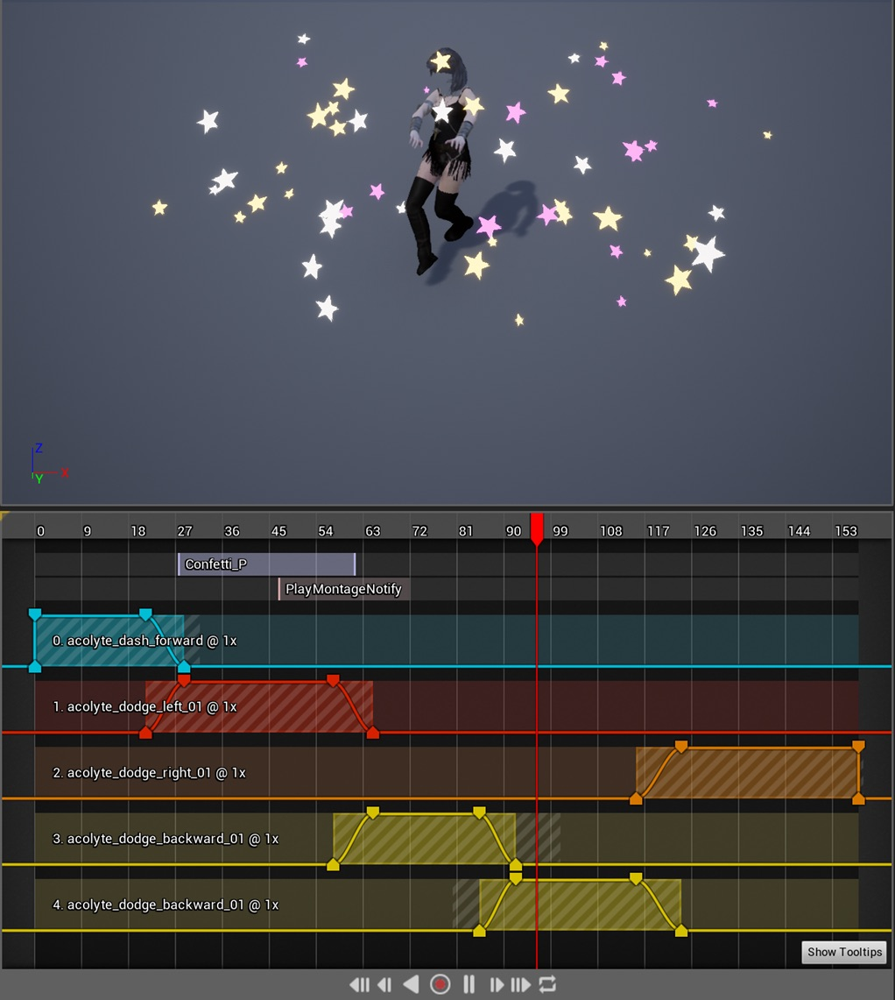

Senior Software Engineer with 14 years of game industry experience,
and 20 years in software. Devoted to building self-contained, data-driven systems,
and streamlined visual editing workflows. My fellow developers are my customers.
Audio API with macOS/iOS, Android, and Windows backends
2007 – 2013
ArenaNet | NCSOFT
Guild Wars 2 - MMORPG, ArenaNet in-house
engine, PC
Automated import/export of voice-over and localization scripts
Data mining API (C++) and search UI scripting (C#/Python)
Interactive content validation
Wild Lands (unreleased) - MMORPG, ArenaNet in-house
engine, PC
Schema-driven gameplay content editor
Interactive content validation
2005 – 2007
Amazon.com
Web service APIs for software deployment
2001 – 2006
Century Auto Business Systems
Texas OCCC-approved used car contract calculation and printing
Education
2001 – 2006
University of Texas at Austin
Bachelor of Science, Computer Science, 3.75 GPA
Material Conversion Workflow
Rec Room Studio is an extension to the Unity Editor that enables
advanced creators to build some very sophisticated content for Rec
Room, including importing assets purchased from the Unity Asset
Store. Third party assets invariably include shaders that will not
be present in the Rec Room game client, and manually creating
materials that were compatible with shaders in the Rec Room game
client was tedious and error prone.
Fortunately, the process is pretty easy to automate, and this tool
I created generally makes all of the right choices for you, but
still allows you override its mapping from third party material
properties to Rec Room material properties.
The left column lists all of the materials found in the creators
content that are currently unsupported by the Rec Room game client.
When a creator imports some new assets, this Material Conversion
window will appear to assist them in making the conversions
immediately, otherwise it will appear when a creator tries to upload
unsupported content to the game. Expanding any of the items in the
left column will list all of the specific models using that
material, which can be helpful to identify a more representative
model to preview the conversion.
The top section of the right column lists all of the material
properties from the unsupported material, and allows creators to
choose which property of a Rec Room compatible material is a good
match for that property. Some automatic matching is done by
a sequence of simple keyword heuristics, e.g mapping a property
named "Color" to the "Albedo" input of a Rec Room material.
The live preview at the bottom of the right column shows you what
you're getting before you commit to it.
Rec Room Glass Prop
I implemented the shader for the glass prop in Rec Room, which
includes a few designer-configurable properties with some commentary
on their effect, such as:
Alpha Influence On Albedo - The color of a transparent
surface is reduced by transparency as more of the incident light
passes through the surface instead of reflecting back to the
observer.
Fresnel Influence On Specular - A transparent surface
is less reflective when viewed head on, as more light passes
through the surface.
Fresnel Influence On Alpha - A transparent surface is
more reflective at a grazing angle, as less light passes
through the surface and more is reflected.
Refraction Index - Configurable
refraction index. Glass is usually around 1.5, but in Rec Room
we default to 2.0.
The shader uses the Fresnel term (evaluated via Schlick or Unity's
approximation, configurable per platform) to vary the alpha and
specular terms, where alpha corresponds to transmission, and
specular corresponds to reflection sampled from an environment map
or light probe. Nothing particularly fancy here, but some basic
research made this look much more like glass than the basic Unity
transparent shader.
Animation Timeline for Unreal Engine 4
This video shows the editor experience for the new Unreal Engine 4
animation asset I created for Vampire the Masquerade: Bloodlines 2.
An Animation Timeline asset can be used anywhere a normal animation
asset is required.
Other animation assets can be dropped onto the timeline,
and adjusted for blending at runtime.
Non-additive animations can be converted to additive animations by
providing a base pose animation.
In this example, two animations that normally target the male
character skeleton, have been retargeted to drive Lou's female
character skeleton.

The UI also has animation event tracks, used here
to trigger a particle system spawning stars from the "Confetti_P" event.
The whole multi-track UI is rendered by a single Slate widget that
implements a very basic, but capable, IMGUI API (not Dear IMGUI).
Typical Unreal Engine editor UI is a tree of Slate Widgets, each
mirroring the underlying state and subscribing to change events in
order to stay in sync. Using that approach here could have been
very time consuming, requring many widgets and carefully synchronizing
the tree of widgets with the underlying data structures.
The advantages of an IMGUI approach were twofold. First, a dynamic
UI can be rendered by traversing the underlying data
structures representing the collection of animations, their start
times, durations, and blend in/out times, and producing a relevant
UI element for each editable aspect, drawing the draggable time
ranges of each animiation track, draggable blend in/out markers,
and the draggable playback needle. This doesn't require any
explicit synchronzation, and the UI elements always directly
represent the underlying state.
Second, Unreal's Live C++
support makes it trivial to recompile and reload the functions that
call the IMGUI API without having to restart the editor or the game
client. This makes iterating on the features of the UI very quick,
since I can try something out and see the results within seconds.
I used the same IMGUI Slate widget to create this debug menu for
the game, which enabled the design and QA teams to quickly select
a variety of gameplay state in order to start the gameplay with
specific progression, character stats, equipemtn, and specific
quest outcomes. Here the mouse cursor is being directed by a
game controller, because this UI also needed to be easily accessible
on a console for QA.
Behavior Tree Bubbles
When debugging a behavior tree in Unity, I added these bubbles
which float above AI-driven characters to show what they are
thinking.
Behavior Tree Debugger
The video above shows the Unity editor experience for debugging
behavior trees while the game is running.
Users can select an AI agent to debug either from the list on the
left, or by clicking on a behavior bubble floating over the
character in the game view.
The behavior tree is rendered showing the green path to the
chosen leaf behavior. By stepping the simulation, the user can
allow the game to continue until the agent makes a different
decision.
Behavior Tree Editor
This screenshot shows the behavior tree editor UI. I implemented
the underlying behavior tree system, and this editor, and game teams
could extend the behavior tree node base class to implement game-specific
game state checks and modifiers.
Spreadsheet Editor
Building vast collections of game content, such as inventory items,
spells, and other special abilities, often benefit from tabular
data entry. Excel and Google spreadsheets can offer a lot of
utility in this regard, and are often used, but can have some serious
drawbacks. Spreadsheets often have very limited game-specific context,
unless it has been generated or manually entered, and they can be very
challenging to diff and merge.
This UI was very easy to render with high performance using Unity's
lowest level IMGUI APIs with very limited indirection.
Each row of the spreadsheet is represented by a separate asset file,
which makes diffing and merging very easy, and reduces the likelyhood of
conflicts between different designers, since they are often working
on different sections of the same content set. Each cell of the
spreadsheet has all of the game-specific context available in the
editor, which makes it easy to select correct enum values, reference
assets of a specific type, or create new assets with well defined
default values. It also benefits from specialized UI only availble
in the editor, such as the localization string selection popup.
This tabular data can still be exported to Excel in order to create
some useful data visualizations like graphs and charts, or to assign
vast swaths of values via formulas, and later imported from Excel
to apply changes only to the modified cells.
Lua Debugger
I implemented a web-based Lua debugger that is hosted by the game client, so
that our gameplay team could connect to a debug build of the game on a mobile
device and debug their code as it ran on the device. For those who
may recognize it, the appearance of the debugger is very heavily
inspired by the Xcode interface at the time 🤓.


{kind=link}
{kind=link}